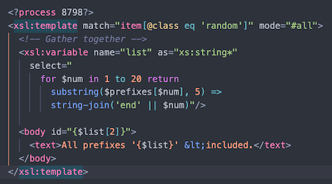
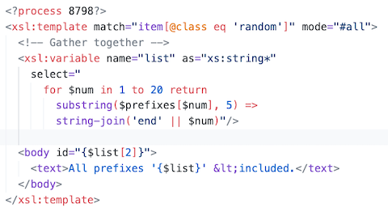
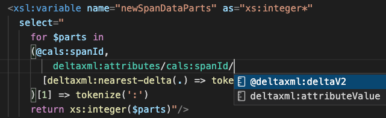
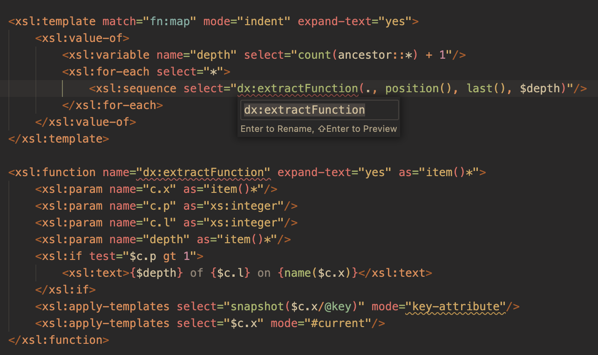

Editing XSLT/XPath
With DeltaXML's XSLT/XPath extension , Visual Studio Code is now a fully featured XSLT 3.0 editor. Standalone XPath 3.1 files are also fully supported. Visual Studio Code's rich ecosystem is now available to XSLT and XPath developers.
Comprehensive, but language-neutral, descriptions of Visual Studio Code can be found in Microsoft's Visual Studio Code User Guide. Links to key sections are below:
- Keyboard shortcuts
- Multiple selections (multi-cursor)
- Find and Replace
- File encoding support
- Emmet (snippet abbreviations)
The documentation here focuses on XSLT and XPath language features. More general XML features are covered on the Editing XML page. Help on navigating code in the editor is provided in the Code Navigation page.
Syntax Highlighting
Eva Dark Theme
For improved performance and precision, this extension eschews the default but problematic TM Grammar and instead uses Visual Studio Code's Semantic Highlighting introduced in 2020. feature. For external color themes you should explicitly enable Semantic Highlighting. See the Settings page for more information.
Github Light Theme
The extension provides syntax highlighting for XSLT instructions, XML Literal Result Elements, XML attributes, XML character references, CDATA sections and all tokens within XPath expressions. XPath expressions within Attribute Value Templates (AVTs) and Text Value Templates are syntax highlighted also.
XSLT/XPath Dark Color Themes
The plethora of VS Code themes will highlight XSLT/XPath very well using Semantic Highlighting fallbacks for language-specific tokens. There is however a XSLT Dark Themes extension that enhances a set of popular dark themes specifically for XSLT and XPath:
- Darcula From IntelliJ
- Gruvbox Material Dark
- Iceberg
- Nord
- Tokyo Night Storm
- Zen
Formatting
Two commands are provided for formatting XML, XSLT or XPath expressions:
- Format Document (⇧⌥F) - Format the entire active file.
- Format Selection (⌘K ⌘F) - Format the selected content.
- Format on Save - Optionally specify to format only modifications.
As well as explicitly invoking commands, formatting can be triggered as you type, when you save a file, or when you paste content from the clipboard. The following settings control this:
editor.formatOnType- Controls indentation for new lines.editor.formatOnSave- Controls indentation for new lines.editor.formatOnPaste- Controls indentation for new lines.editor.editor.formatOnSaveMode- modifications setting, only formats code changes on save.
The XPath formatter indents code blocks within {}, [] and () bracket-pairs.
Indentation is also adjusted for if/else blocks and range-variable blocks.
Folding
Folding with this extension uses indentation to determine fold regions.
To set a region code-folding block, surround it with <?region?> and <?endregion?> processing instructions.
You may optionally include a label for the processing instructions, for example:
<?region modeA?>
...
<?endregion modeA?>
For more detail and a full list of Folding-related actions see the Folding section in Visual Studio Code's User Guide.
Intellisense (Auto Complete)
Intellisense suggestions include all in-scope XSLT and XPath symbols from xsl:accumulator names
to xsl:variable names, to anonymous XPath function parameters. There is intellisense
also for XSLT and XPath functions - help for built-in functions is shown alongside the suggestions list. Symbols from
included/imported files are included in the suggestions list.
Intellisense for XPath Locations
An XML source file is used for context to provide XML node-names when editing XPath location steps. This is the last non-XSLT file opened in Visual Studio Code.
XPath is evaluated as you type so node-names in the auto-completion list are filtered to be just those that are possible given previous XPath steps such as axes and node-name tests.
Triggering the auto-complete list
For XSLT intellisense, the < character triggers suggestions. XSLT instruction suggestions fit the context of the curstor location. On accepting a suggestion a Code Snippet is inserted which will include common attributes for the selected instruction.
Intellisense is manually triggered with ⌃Space, with Tab or Enter used to accept suggestions. These key bindings are fully customizable.
XSLT Instruction Snippets
The special xsl:stylesheet suggestion includes a boiler plate 'identity transform' stylesheet complete with namespace
declarations.
The xsl:message suggestions include a Watch Variables snippet that lists the names and values of all
the immediate in-scope variables or parameters.
More Snippets
You can define your own snippets in Visual Studio Code in a declarative way, without writing an extension. See the Visual Studio Code documentation: Create your own snippets.
Emmet Snippets provide a useful shorthand for inserting literal result elements. They can be enabled for XSLT in Visual Studio Code Settings.
Bracket Matching
Matching brackets in XPath expressions are highlighted when the cursor is near one of them. You can jump to the matching bracket with ⇧⌘\
Symbol Renaming
The Rename Symbol command F2 (available in the context-menu) updates all in-scope usages of the symbol - across all imported stylesheet modules. Press ⇧Enter to preview the updates or Enter to perform updates immediately.
Code Refactoring
Code refactoring features like Extract xsl:function and Extract xsl:template are provided via VS Code's Quick Fix (⌘.) feature and the Refactor command.
An available refactoring for a selection is indicated by a light-bulb💡 adjacent to the selection. Clicking on the 💡 will display the available refactorings. The light-bulb is only shown when the code selection is a valid expression or a set of XSLT instructions that would be valid inside the new component. If you don't see the light-bulb when you expect to, check that the code selection completely encloses the XSLT instruction or XPath expression.
The name of an extracted new component should be changed with the Rename Symbol feature, this is automatically triggered when the new component is added.
After refactoring, the XSLT is updated to fix any context problems introduced when code is moved.
The new component has xsl:param instructions added to provide context-properties required.
For extract to xsl:function two modes are available (fully documented here):
- full refactoring - fixes 'missing-context' problems by updating XSLT to reference the context-property parameters.
- partial refactoring - highlights 'missing context' problems in the XSLT.

XSLT Linter
The XSLT/XPath linter performs checks on your code as you type, peforming symbol reference tests across all included modules. Any problems are shown in the Problems Panel and also highlighted inline with a squiggly underline for the specific token at issue. Here is a summary of the key checks:
- XML Syntax
- XSLT/XPath Variable name references
- XSLT/XPath Parameter name references
- All other symbol name refererences (
xsl:accumulatorxsl:keyetc.) - Function name and arity (number of params)
xsl:with-paramnames- File locations in
xsl:importxsl:includexsl:use-package - Order of operators/operands in XPath
- Matching of brackets in XPath
- Presence of the context-item for expressions where it is required
- XSLT instructions and their attributes
- Duplicate global symbol names
- Attribute Value Template Syntax
- Text Value Template Syntax
Inferred Imports for 'Non-Standalone' Stylesheets
Non-standalone XSLT stylesheet modules have missing imports because they are imported by a parent module that declares the required imports. If no knowledge of the parent module is available, spurious problems can be reported. In such cases, the spurious problems are annoying and may obscure reported problems that are actually relevant.
The Inferred Imports feature prevents spurious problems being highlighted in the editor. With this featue, a search is made to find if the active XSLT stylesheet has been declared as an import by another stylesheet opened recently in Visual Studio Code. If such a 'parent' stylesheet is found (the most recently opened example is used) it is imported along with any other imports. Functions and, variables etc. used in the active stylehseet can therefore be resolved.
Unused Variables
The Code Checker detects unused variables and parameters declared in either XSLT or XPath expressions. These are highlighted by being 'grayed out' in the editor. Global variables are shown as unused if they are not referenced in the current file, the 'unused' state is not affected by imported stylesheets thay may reference the same variable.
Compile-time and Run-time problems
The Code Checking feature is designed to find most basic code problems due to typos or changes to referenced symbols. When XSLT is run, an attempt is made to parse error messages from the Saxon XSLT procesor (shown in the Task tab of the Terminal View) so that the problem token is highlighted, and the error message is shown in the Problems View.
You can quickly create a new XSLT file when adding a xsl:import, xsl:use-package or xsl:include XSLT instruction. Simply enter the file path
in the href, press ⌘+click and then, in the 'Unable to Open...' dialog press the Create File button.